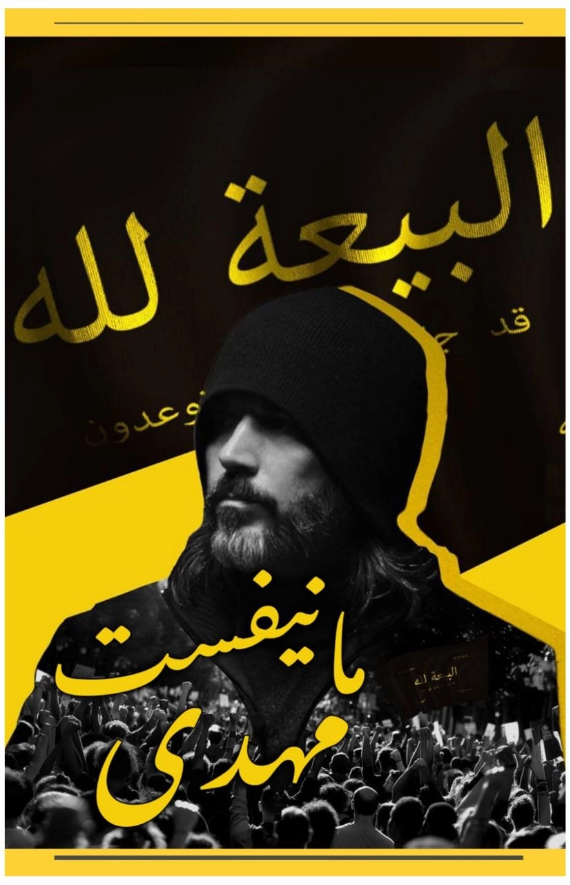
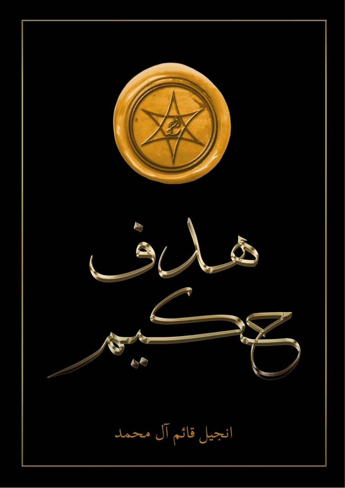

کتاب
مانیفست مهدی
مرجع اصلی معرفی دین صلح و نور احمدی؛ متنی که روایت عهدهای هفتگانه، سه نشانهٔ شناخت حجت و دعوت به پیمان و گردهمایی در عصر حاضر را شرح میدهد.
این صفحه کتابخانه منابع وبسایت است: کتابهای اصلی — با مطالعه آنلاین و دانلود — نسخههای صوتی و منابع تلگرام جامعه فارسیزبان؛ همه در یکجا.
دو منبع اصلی این دعوت؛ بدون دانلود مستقیم در مرورگر بخوانید، یا دانلود مستقیم و تلگرام را برگزینید.

مرجع اصلی معرفی دین صلح و نور احمدی؛ متنی که روایت عهدهای هفتگانه، سه نشانهٔ شناخت حجت و دعوت به پیمان و گردهمایی در عصر حاضر را شرح میدهد.

کتابی با چهل و دو «درب» که در سال ۲۰۲۲ منتشر شده است؛ پس از هفت دربِ نخست دربارهٔ عهدهای خدا با انسان، به موضوعهایی مانند تناسخ، فرشتگان و جن، رؤیاها، اخلاق و رویدادهای پایان زمان میپردازد.
کتابها با مرورگر شما باز میشوند و نیازی به نرمافزار اضافی ندارند. فایلها مستقیماً از وبسایت در برگهٔ جدید نمایش داده میشوند.
ویدئوهای آموزشی و سخنرانیهای این دعوت در دو زبان:
ویدئوهای آموزشی و محتوای مرتبط با آموزههای این دعوت به زبان فارسی.
Educational videos and lectures in English — The Mahdi Has Appeared.
خوانشهای صوتی منابع، از طریق کانال تلگرام در دسترس است.
خوانش صوتی کتاب مانیفست مهدی در کانال تلگرام جامعه فارسیزبان.
نسخه صوتی کتاب هدف حکیم، همراه با فایل کتاب، در کانال تلگرام.
گروه و کانال تلگرام جامعه فارسیزبان؛ محل پرسش، گفتوگو و انتشار منابع.
گروه رسمی فارسیزبان برای پرسش، گفتوگو و آشنایی با جامعه این دعوت.
کانالی که کتابها، خوانشهای صوتی و منابع فارسیزبان در آن منتشر میشود.
پیشنهاد ما: نخست مانیفست مهدی، سپس هدف حکیم — و برای پرسشها، گروه تلگرام فارسیزبان.